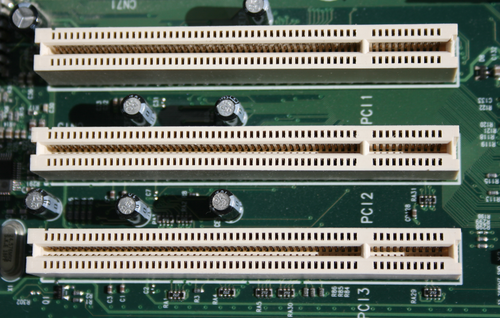

BUS
- Felix Utama (171110932)
- Jimmy (171110134)
- Bryan Marcelino (171110487)
Anggota Kelompok :
Definisi Bus
- Bus atau disebut juga dengan pathway merupakan suatu sirkuit yang merupakan jalur transportasi informasi antara dua atau lebih alat-alat dalam system computer. Umumnya, suatu bus terdiri dari berbagai lintasan komunikasi dan saluran
- Sistem Bus adalah kumpulan bus yang menghubung komponen - komponen utama komputer (CPU, Memory dan I/O)
Interkoneksi Bus
- Control Bus
- Address Bus
- Data Bus
Struktur Bus dibagi menjadi 3 :
Control Bus
- Bus ini digunakan sebagai pengontrol akses saat bus data dan adress dilakukan.
- Control Bus memberikan signal signal seperti : Memory Write & Read, I/O Write & Read, Trasfer ACK, Bus Request & Grant, Interrup Request & ACK, Clock, Reset
Data Bus
- Berfungsi untuk mentransfer data, membawa data dari dan ke perangkat atau periferal
- Terdiri atas beberapa jalur penghantar, 8, 16, 32 bahkan 64 bahkan lebih jalur paralel
- Data ditransmisikan dalam dua arah, yaitu dari CPU atau mikroprosesor ke unit memori atau modul I/O dan sebaliknya.
- Semakin lebar bus maka semakin besar data yang dapat ditransfer sekali waktu.
Address Bus
- Bus ini digunakan untuk menandakan tujuan data yang ada di bus data.
- Lebar bus alamat menentukan jumlah memori yang dapat ditangani oleh sistem.
- Di Adress bus terdapat yang namanya Higher order bits dan juga Lower order bits.
Interkoneksi BUS

Prinsip Operasi BUS
- Meminta Penggunaan Bus.
- Apabila disetujui modul akan memindahkan data yang diingkan ke modul yg dituju.
Pengiriman Data :
Prinsip Operasi BUS
- Meminta Penggunaan Bus.
- Mengirim Request ke modul yg ditujui melalui saluran kontrol dan alamat yang sesuai.
- Menunggu modul yang dituju mengirimkan data yang diinginkan.
Meminta Data :
Kelemahan pada BUS
Bila terlalu banyak modul atau perangkat dihubungkan pada bus maka akan terjadi penurunan kinerja
Kelemahan pada BUS
- Semakin besar delay propagasi untuk mengkoordinasi penggunaan bus
- Antrian penggunaan bus semakin panjang
- Dimungkinkan habisnya kapasitas transfer bus sehingga memperlambat data
Faktor - Faktor :
Arsitektur BUS
Untuk mengatasi permasalahan akan kelemahan bus maka dibuatlah beberapa arsitektur BUS dasar dengan tujuan untuk meningkatkan efisiensi sistem.
Arsitektur BUS
Arsitektur bus terdapat 2 jenis teknologi BUS sistem, yaitu :
- Traditional Bus
- High Speed Bus
Traditional BUS
Traditional Bus
- Peripheral High-Speed (network, SCSI, Video, Graphic) dengan Peripheral Low- Speed dikoneksikan pada expansion bus yang sama, sehingga kinerja bus tidak optimal
- Beban Bus sistem sangat berat, sehingga kinerjanya lambat
- Traditional Bus ini merupakan sistem bus tunggal (Single Bus system) yang populer diterapkan pada jenis IBM-PC : 8088, era tahun 80′an
High Speed BUS
High Speed Bus
- High Speed Bus , yaitu bus berkecepatan tinggi untuk koneksi peripheral berkecepatan tinggi : Video, Graphic , Network, SCSI
- Expansion Bus , yaitu bus berkecepatan rendah untuk koneksi peripheral berkecepatan rendah , seperti: Modem, Fax , Serial
- Beban Sistem Bus menjadi lebih ringan sehingga kinerjanya menjadi lebih cepat.
- High Speed bus merupakan jenis bus ganda (multi bus)
Jenis - Jenis Bus
- Bus ISA (Industry Standard Architecture) adalah sebuah arsitektur bus dengan bus data selebar 8-bit yang diperkenalkan dalam IBM PC 5150 pada tanggal 12 Agustus 1981.
- Keuntungan dari Bus ISA adalah bahwa pendekatan ini tetap mempertahankan kompatibilitas dengan mesin-mesin dan kartu-kartu yang ada
BUS ISA
BUS ISA
Jenis - Jenis Bus
- Peripheral Component Interconect (PCI) adalah bus yang tidak tergantung prosesor dan berfungsi sebagai bus mezzanine atau bus peripheral. Standar PCI adalah 64 saluran data pada kecepatan 33MHz, laju transfer data 263 MB per detik atau 2,112 Gbps.
- Keunggulan PCI tidak hanya pada kecepatannya saja tetapi murah dengan keping yang sedikit.
BUS PCI
BUS PCI
Jenis - Jenis Bus
- Semua perangkat peripheral tidak efektif apabila dipasang pada bus kecepatan tinggi PCI, sedangkan banyak peralatan yang memiliki kecepatan rendah seperti keyboard, mouse, dan printer. Sebagai solusinya tujuh vendor computer (Compaq, DEC, IBM, Intel, Microsoft, NEC, dan Northen Telecom) bersama-sama meranccang bus untuk peralatan I/O berkecepatan rendah. Standar yang dihasilakan dinamakan Universal Standard Bus (USB).
BUS USB
Jenis - Jenis Bus
- Mudah dihubungkan ke komputer karena tidak perlu membuka penutup komputer.
- Bentuk konektor USB seragam, hanya ada dua bentuk tipe socket.
- Hot-plugable – artinya peralatan USB dapat dihubungkan saat komputer hidup
- Plug and Play – artinya peralatan USB mudah digunakan, saat dihubungkan ke komputer, komputer akan mengenali mengambilprogram (driver) yang sesuai dengan peralatan tersebut.
- Perlatan yang memerlukan sumber daya kecil, bisa mengambil sumber daya dari port USB. Sumber daya peralatan dimatikan saattidak digunakan.
- Kecepatan transfer data tinggi, dapat mencapai 12 Mbps.
- Satu port USB dapat dihubungkan dengan 127 alat.
Karakteristik BUS USB
BUS USB
Jenis - Jenis Bus
- Small Computer System Interface (SCSI) adalah perangkat peripheral eksternal yang dipopulerkan oleh macintosh pada tahun 1984. SCSI merupakan interface standar untuk drive CD- ROM, peralatan audio, hard disk, dan perangkat penyimpanan eksternal berukuan besar. SCSI menggunakan interface paralel dengan 8,16, atau 32 saluran data.
- Small Computer System Interface (SCSI) merupakan set standar untuk menghubungkan secara fisik dan mentransfer Data antara komputer dan periferal . SCSI mendefinisikan perintah, protokol (komputer) dan antarmuka listrik dan optika . SCSI ini paling sering digunakan untuk Cakram Keras, tetapi dapat menghubungkan berbagai perangkat lain, termasuk pemindai dan drive CD .
BUS SCSI
BUS SCSI
Konfigurasi BUS SCSI
Jenis - Jenis Bus
- Disebut juga dengan front-side bus (FSB), merupakan bus tercepat pada komputer dan merupakan inti dari chipset (dan motherboard). Utamanya, bus ini di gunakan oleh mikroprosesor untuk melewatkan informasi ke / dari chache atau memori utama, dan juga ke chipset north-bridge.
- Bus prosessor pada komputer sekarang berjalan pada kecepatan 66MHz, 100MHz, 133MHz atau 200Mhz menggunakan lebar jalur data 64 bit (8 byte).
BUS Prosessor
BUS Prosessor
Jenis - Jenis Bus
- Bus AGP adalah sebuah bus yang dikhususkan sebagai bus pendukung kartu grafis berkinerja tinggi, menggantikan bus ISA, bus VESA atau bus PCI yang sebelumnya digunakan. Sebenarnya AGP dibuat berdasarkan bus PCI, tapi memiliki beberapa kemampuan yang lebih baik. Selain itu,secara fisik, logis dan secara elektronik, AGP bersifat independen dari PCI.Tidak seperti bus PCI yang dalam sebuah sistem bisa terdapat beberapa slot, dalam sebuah sistem, hanya boleh terdapat satu buah slot AGP saja.
BUS AGP
BUS AGP
Jenis - Jenis Bus
- Merupakan sebuah standar/spesifikasi bus input/output serial yang berkecepatan tinggi dan bersifat umum (non-proprietary) yang dapat digunakan untuk menghubungkan perangkat- perangkat digital seperti halnya komputer pribadi dan perangkat lainnya (kamera digital, jaringan, dan lain-lain).
Bus P1394 / Fire Wire
BUS Firewire
Jenis - Jenis Bus
- adalah sebuah bus I/O ber-bandwidth 32-bit yang digunakan dalam beberapa komputer mikro. Bus ini dibuat oleh IBM yang ditujukan untuk menggantikan bus ISA 8-bit/16-bit yang lambat, selain tentunya untuk menghadapi masalah bottleneck yang terjadi akibat kecepatan prosesor yang semakin tinggi tapi tidak diimbangi dengan kecepatan bus I/O.
Bus MCA (Micro Channel Architecture)
BUS MCA

Elemen - Elemen Bus
- Dedicated
- Multiplexed
Berdasarkan Jenis :
Suatu saluran bus di dedicated secara permanen diberi sebuah fungsi atau subset fisik komponen - komponen komputer.
Metode penggunaan saluran yang sama untuk berbagai keperluan.
KEUNTUNGAN
- Dedicated
- Multiplexed
Throughput yang tinggi, karena terjadi kemacetan yang kecil
Memerlukan saluran yang sedikit menghemat ruang dan biaya
KERUGIAN
- Dedicated
- Multiplexed
Meningkatnya ukuran dan biaya sistem
Rangkaian lebih kompleks, terjadi penurunan kinerja, kerena event-event tertentu yang menggunakan saluran bersama-sama tidak dapat berfungsi secara paralel
Elemen - Elemen Bus
- Tersentralisasi
- Terdistribusi
Berdasarkan Metode Arbitrasi-nya :
Sebuah perangkat H/W (pengontrol bus arbiter) bertanggung jawab atas alokasi waktu pada bus.
tidak terdapat pengontrol sentral, tapi setiap modul terdiri dari access control logic dan modul-modul berkerja sama untuk memakai bus bersama-sama.
Elemen - Elemen Bus
- Synchronous
- Asynchronous
Berdasarkan Timing-nya :
Terjadinya event pada bus ditentukan oleh clock.
Terjadinya event pada bus ditentukan oleh event sebelumnya.
Elemen - Elemen Bus
- Semakin lebar bus data, semakin besar bit yang dapat ditransfer pada suatu saat.
- Semakin lebar bus alamat, semakin besar range lokasi yang dapat direferensi.
Berdasarkan Lebar Bus :
Contoh :
Sebuah bus 8-bit yang beroperasi pada tingkat siklus 1.000 MHz (1.000.000 kali per detik) dapat mentransfer 8 Mbps.
Elemen - Elemen Bus
- Operasi Read
- Operasi Write
- Operasi Read Modify Write
- Operasi Read After Write
- Operasi Block